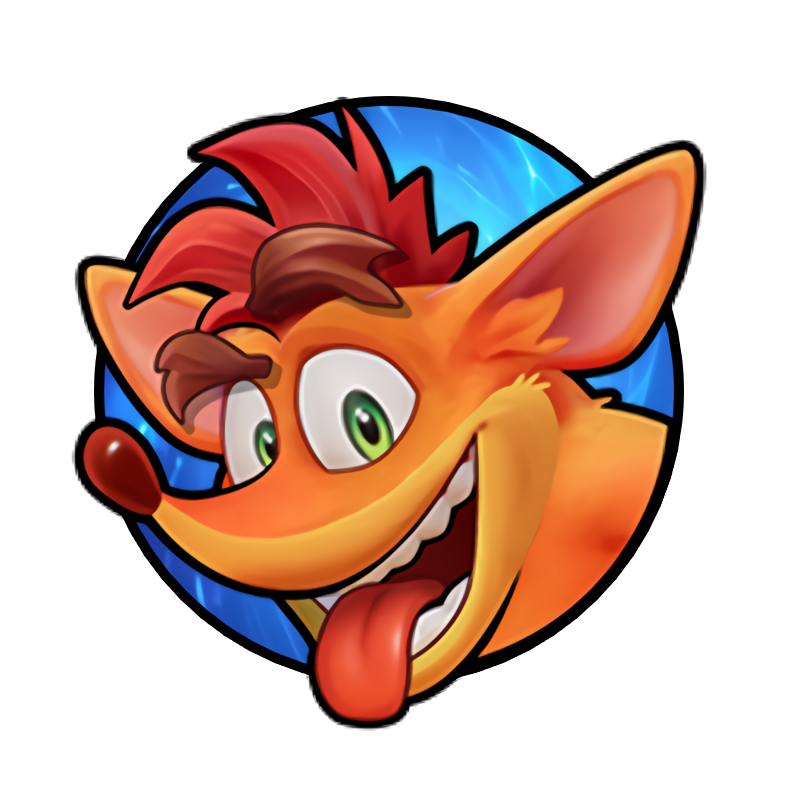

Canal loucuras da internet.

Conheça o curso de Jogos Digitais, saiba onde estudar esta graduação e entenda como está o mercado de trabalho para este profissional!
Veja mais cliquando aqui...
Games digitais na sala de Aula.
Veja mais cliquando aqui...
OMS classifica vício em jogos eletrônicos como doença.
Veja mais cliquando aqui...
Cadastro de Sócios
Cllique aqui para fazer cadastro
Equipes da Copa do Mundo
Acesse a Página de Quiz
Jogos para navegador
Jogue Bomberman
Jogue Doodle
Helicopter
Jogue Tetris
Jogue Snake